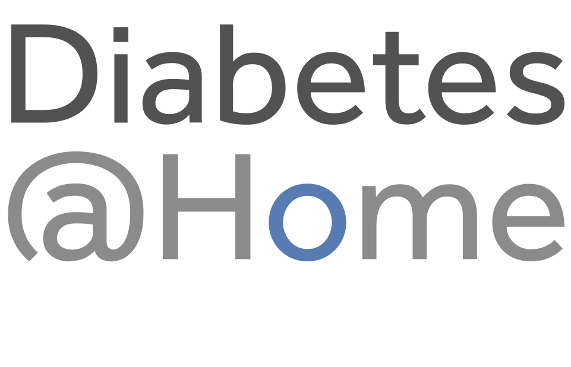

Diabetes is a serious complex condition which can affect the entire body. Diabetes requires daily self care and if complications develop, diabetes can have a significant impact on quality of life and can reduce life expectancy. While there is currently no cure for diabetes, you can live an enjoyable life by learning about the condition and effectively managing it.
There are different types of diabetes; all types are complex and serious. The three main types of diabetes are type 1, type 2 and gestational diabetes.
When someone has diabetes, their body can’t maintain healthy levels of glucose in the blood. Glucose is a form of sugar which is the main source of energy for our bodies. Unhealthy levels of glucose in the blood can lead to long term and short term health complications.
For our bodies to work properly we need to convert sugars from food into energy. Sugars from food are converted into glucose. A hormone called insulin is essential for the conversion of glucose into energy. In people with diabetes, insulin is no longer produced or not produced in sufficient amounts by the body. When people with diabetes eat foods that contain sugars or starches, such as breads, cereals, fruit and starchy vegetables and sweets, it can’t be converted into energy and the level of glucose in their blood rises and is harmful to them.
Instead of being turned into energy the glucose stays in the blood resulting in high blood glucose levels. After eating, the glucose is carried around your body in your blood. Your blood glucose level is called glycaemia. Blood glucose levels can be monitored and managed through self care and treatment.
There is no cure for diabetes. Treatment aims to prevent complications by controlling blood glucose levels, as well as blood pressure and cholesterol levels, and by achieving a healthy body weight.

The blue circle is the universal symbol for diabetes. It was introduced in 2006 to give diabetes a common identity. The symbol aims to: Support all existing efforts to raise awareness about diabetes.
• The number of people with diabetes rose from 108 million in 1980 to 422 million in 2014. Prevalence has been rising…
Read more on WHO
Diabetes is a serious complex condition which can affect the entire body. Diabetes requires daily self care and if…
Read more on Diabetes Australia
This fact sheet will help you understand what diabetes is, the risk factors for type 2 diabetes and the health benefits of…
Read more on Baker Heart & Diabetes Institute